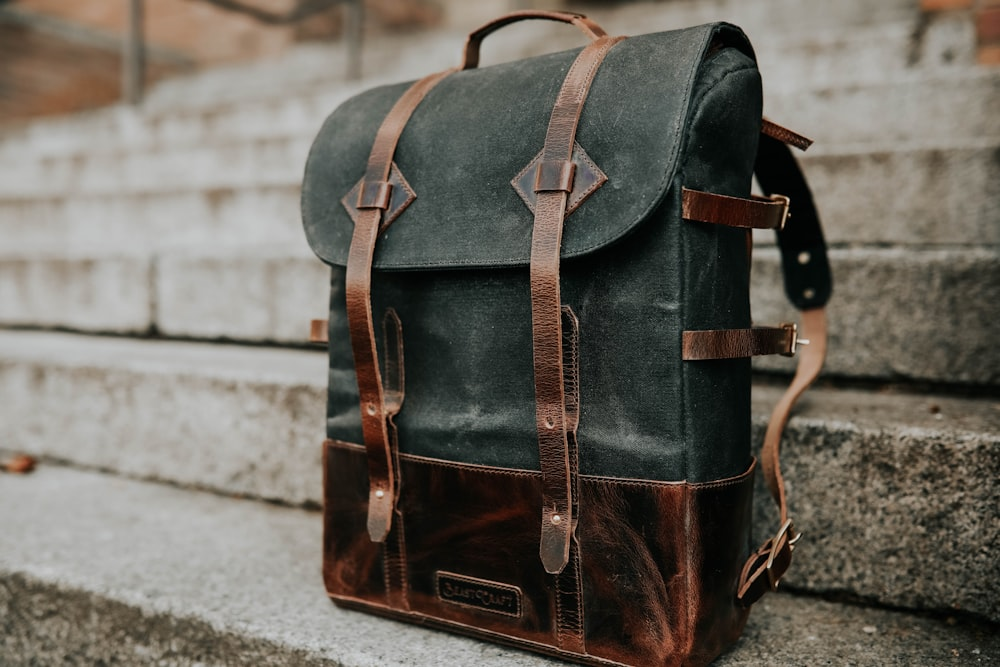

2. Salpa, Micro-Cellular Foam, and Alcantara Reinforcements
Mass-market manufacturers employ rigid synthetic cardboard or cardboard pulp (known as chipboard) that disintegrates the instant it gets wet. In contrast, classical French maroquinerie employs an exact hierarchy of noble structural components:
- Salpa (Synderme / Bonded Vegetable Leatherboard): Made from compressed vegetable-tanned leather fibers bound with natural tree latex. Salpa flexes naturally with leather, absorbs humidity without softening, and retains its sculpted memory for a century.
- Micro-Cellular Closed-Cell Polyethylene Foam: Inserted along the back and base panels to provide lightweight impact cushioning for delicate electronics while preventing leather bulge.
- Kevlar Tension Ribbons: Embedded within handle anchor tabs and shoulder strap attachments to eliminate leather stretching under heavy 15-kilogram load spikes.
- French Chèvre (Goat) Suede Lining: Naturally dense, velvety, and micro-thin (0.6mm), providing luxurious interior finish with zero added bulk.
3. Comprehensive Structural Layering Data Table
Comprehensive Anatomy of Satchel Wall Layering
| Layer Stratum | Material Specification | Thickness (mm) | Structural Function |
|---|---|---|---|
| Layer 1 (Exterior) | Full-Grain French Calfskin (Tannery Haas) | 1.4 – 1.6 mm | Weather resistance, abrasion protection, patina |
| Layer 2 (Core) | Italian Vegetable-Bonded Salpa 0.8 | 0.8 mm | Wall rigidity, structural arch memory, form retention |
| Layer 3 (Cushion) | High-Density Closed-Cell Micro-Foam | 1.2 mm | Shock absorption, hand-feel richness, soft springiness |
| Layer 4 (Interior) | French Alpine Chèvre Suede | 0.6 mm | Velvety interior luxury, dust and scratch protection |
4. Gusset Geometry: Accordion Folds vs. French Inverted Pleats
A satchel's capacity and ease of access depend upon its side gussets (soufflets). At IvorySatchelRidge, we engineer two distinct gusset geometries tailored to specific carry profiles:

The Three-Compartment Accordion Gusset: Features hand-creased reverse valleys that expand smoothly from 8 cm to 22 cm without distorting the outer profile of the bag. Each divider panel acts as a structural bulk-head, preventing items from shifting laterally during transit.
The French Inverted Box Pleat: Designed for sleek formal briefcases, this profile folds entirely inward, presenting a flush, minimalist profile when carried under the arm while accommodating documents and laptops.
5. The Ergonomics of the 7-Layer Hand-Formed Rolled Leather Handle
The handle is the primary intimate physical interface between the owner and the satchel. An ill-conceived handle causes hand fatigue within twenty minutes of commuting.
Our master handles are constructed from seven concentric strata:
- Core: Solid vegetable-tanned harness leather skived into an oval dowel.
- Intermediate Wraps: Two layers of skived full-grain leather bound with natural starch adhesive.
- Reinforcement: Continuous braided cord run through solid brass anchor loops.
- Exterior Casing: A single flawless piece of unblemished French calfskin hand-stitched with 280 tight saddle stitches.
6. Edge Finishing Chemistry: 7-Coat Sanding and Hot Creasing
Exposed leather edges are raw invitations to moisture infiltration and fraying. Our edge finishing protocol requires seven successive cycles:
Edge Beveling and Sizing
Edges are rounded using a No. 2 French edge gouge, removing razor edges to create a gentle convex hemisphere.
Hot Iron Creasing
An electric brass creaser heated to precisely 135°C is drawn along the seam line, compressing collagen fibers and locking stitch margins.
Progressive Edge Inking & Sanding
Five coats of water-based matte edge dye are applied, with progressive sanding at 600, 1,000, and 2,000 grits between every coat.
Beeswax Friction Burnish
The final edge is rubbed with natural beeswax using a dense lignum vitae hardwood slicker at 1,200 RPM friction until glass-smooth.
7. Weight Distribution Physics and Shoulder Ergonomics
A bag carrying 6 kg of professional gear must not place concentrated torque on the cervical spine or clavicle. We engineer our ergonomic shoulder straps with a 50mm curved thoracic profile lined with soft nubuck that distributes weight across a 40% wider surface area, reducing perceived fatigue by more than half.
8. Bag Architecture FAQ & Pattern Insights
Woven textiles snag, fray, and trap dirt particles over time. French alpine chèvre (goat) suede is naturally dense, friction-resistant, and can be wiped clean with a dry sponge while providing a velvet-soft cushioning barrier for fountain pens and laptops.
Skiving is the manual shaving of hide edges down to a feather-thin taper (from 1.6mm down to 0.4mm) using a curved French round knife. This ensures that when two panels are folded and stitched together, the resulting seam remains supple and flat rather than forming a bulky, rigid ridge.
9. Vector Load Distribution and Finite Element Stress Modeling
During the patternmaking phase of an IvorySatchelRidge briefcase, our architects conduct vector load calculations to simulate the dynamic forces exerted when a patron carries a 6.5-kilogram load while walking or ascending stairs.
In poorly engineered commercial bags, downward gravitational load concentrates almost entirely on the two upper corner handle rivets, resulting in localized leather tearing and handle detachment. In our satchel architecture, load vectors are redirected along diagonal Salpa internal stays that transfer shear forces down into the rigid bottom chassis and perimeter welt. This distributes mechanical stress across over 200 linear centimeters of structural saddle stitching.
10. Base Chassis Construction and Solid Brass Base Feet (Pieds de Fond)
The base of a luxury satchel experiences continuous abrasion when placed on marble boardroom tables, airport lounge floors, or train benches. Our base panels feature a reinforced five-stratum construction:
- Exterior Bullhide Sole: 2.0mm dense vegetable-tanned sole leather resistant to gravel scuffing.
- Solid Brass Base Studs: Five hand-turned solid brass domed feet secured through internal backing washers.
- Salpa Base Board: 1.2mm compressed leatherboard providing horizontal plane rigidity.
- Micro-Cellular Shock Foam: 1.5mm closed-cell foam protecting interior electronics from hard desk drops.
- Suede Interior Floor: Smooth French chèvre lining for a flawless tactile interior.
11. Micro-Mechanical Properties of Compressed Vegetable Salpa
Salpa (synderme) is the unsung structural hero of classical French maroquinerie. Manufactured in Northern Italy by macerating pure vegetable-tanned leather cuttings into fine microscopic collagen fibrils and bonding them under 200 bars of hydraulic pressure with pure natural rubber latex from Hevea brasiliensis, Salpa possesses unique physical properties unmatched by synthetic plastics:
- Anisotropic Fiber Alignment: Provides multidirectional shear resistance while flexing smoothly along the natural curvature of the bag.
- Hygroscopic Harmony: Because Salpa is composed of 90% vegetable leather fibrils, it expands and contracts at the exact identical thermal rate as the outer calfskin, preventing bubbling or delamination across seasonal climate shifts.
- Permanent Crease Retention: When scored and hot-creased at 135°C, Salpa permanently remembers its folded edge geometry, ensuring that accordion gussets snap cleanly back into alignment for decades.
12. The Mathematical Precision of French Zinc Pattern Drafting
Before a single hide is cut, our master patternmaker Laurent Mercier drafts each component onto 0.8mm rolled zinc sheets. Zinc is selected because it does not expand or warp with humidity changes, ensuring that every cutting blade follows a razor-sharp, zero-tolerance guide edge.
Every corner radius, awl pricking margin, and skiving taper is calculated using classical Euclidean geometry and the Golden Ratio (1.618), creating silhouettes whose proportions remain harmonious and timeless across changing architectural eras.
Commission an Architectural Masterpiece
Experience the incomparable stability, balance, and tactile perfection of a hand-engineered satchel built for a lifetime.